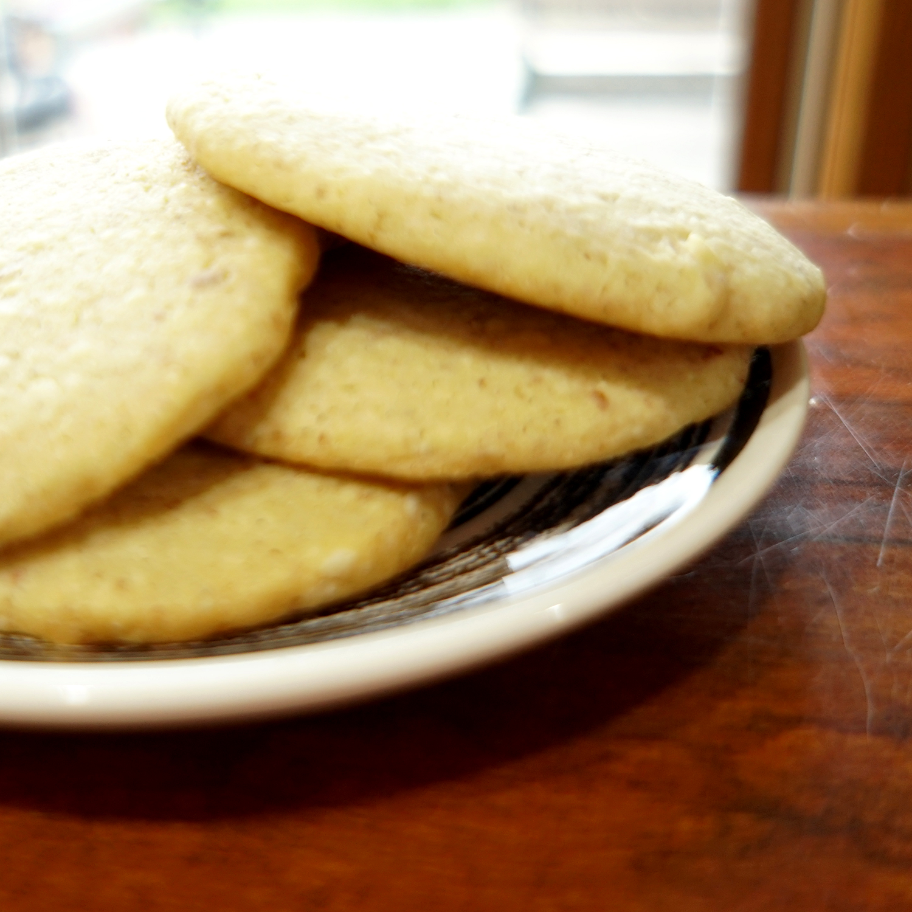

Munchables, both savory and sweet. With snacks like these, I'm hard to beat!

Ingredients
- 2c Flour
- 1c Ground Almonds
- 1c Milk Powder
- 1t Baking Soda
- 1/2t Salt
- 2t Ground Cardamom OR
- 1T Ground Ginger
- 1c Room Temp Butter
- 1c Sugar
- 2 Eggs
Battle Biscuits
- Preheat oven to 350F and line 2 cookie sheets with parchment paper
- In a large mixing bowl, whisk together the flour, ground almonds, powdered milk, baking soda, salt, and flavoring
- In a separate bowl, beat butter and sugar until light and fluffy, about 5 minutes. Add the eggs one at a time to the butter/sugar mixture. Add the flour mixture and mix until incorporated.
- Divide the dough in half. Working with one half at a time, roll out the dough on a liberally floured surface to about 1/4 inch thickness. Cut out 2 1/2-inch shapes.
- Place the shapes about 1/2 inch apart on the lined cookie sheets and bake 10 minutes or until there is a light golden brown color on the bottom. The tops should be pale.

Ingredients
- 4 Granny Smith Apples
- 1/4c Brown Sugar
- 1/4c Raisins
- 1t Ground Cinnamon
- 1/3c Water
- 1T Butter
- 3/4c Boiling Water
Stuffed Apples
- Preheat oven to 375F
- Core apples so the core is gone but leave the blossoms intact. Have an opening that is about and inch wide.
- Mix brown sugar, raisins, and cinnamon. Stuff apples as tight as you can with the sugar mixture. Place in 9x9 baking dish and top with a dot of butter.
- Pour in boiling water to the borrom of the baking dish. Bake for 30-45 minutes, until the apples are cooked through but not mushy.
- (Optional, top with vanilla ice cream to make a dessert.)